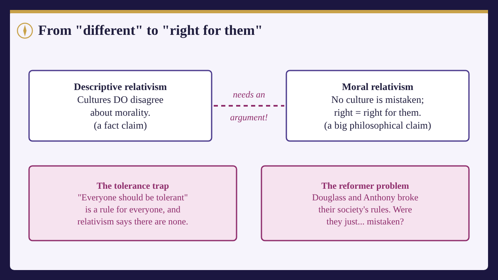

Card 1: Different places, different rules
Travel a little and you'll notice that people disagree about how to behave. In some countries, leaving a tip is expected; in others it can seem rude. Some families eat with their hands; others think that's bad manners. Greetings can be a handshake, a bow, or a kiss on each cheek.
Bigger disagreements exist too, about family duties, honesty, punishment and fairness. Anthropologists have recorded a huge range of moral codes across history.
The plain claim that cultures do in fact disagree about morality is called descriptive relativism. It's a fact claim, the kind you sorted in Session 1, and almost nobody denies it. It describes what people believe. It doesn't say who, if anyone, is right.
Card 2: From "different" to "right for them"
Moral relativism (sometimes called metaethical relativism) makes a much bigger claim: there is no single moral truth for everyone. Whether something is right or wrong depends on the standards of a group or a person.
There are two main versions:
- Cultural relativism: right and wrong are set by your culture's standards. "Stealing is wrong" is true for a society whose standards forbid it.
- Individual relativism (also called subjectivism): right and wrong are set by each person's own standards. "Stealing is wrong" is true for me if my standards forbid it.
Notice the jump. Descriptive relativism says cultures disagree. Moral relativism says none of them is mistaken. Getting from the first to the second needs an argument, because, as you saw last time, disagreement on its own doesn't prove there's no truth to find.
Card 3: Why relativism appeals
Relativism isn't a lazy view. People are drawn to it for good reasons.
Humility. Who are we to say our own culture has everything right? Every culture has believed it was right, and many were wrong about a lot.
History. Powerful nations have often forced their customs on others, sometimes with terrible results, and called it "civilizing" them. Relativism seems to protect against that kind of arrogance.
Respect. Relativism seems to say: other ways of life deserve to be taken seriously on their own terms.
These are real values. The question is whether relativism actually supports them.
Card 4: The tolerance trap
Many people say relativism is true and therefore we should be tolerant of other cultures. But look closely at "we should be tolerant."
That's a moral claim, and it's meant for everyone, everywhere. If cultural relativism is true, though, no moral claim holds for everyone. Tolerance would be right only in cultures whose standards value it. A culture whose standards say "never tolerate outsiders" would be right, by its own standards, to be intolerant.
So relativism can't give you tolerance as a rule for all. Ironically, the view many people adopt for the sake of tolerance can't say intolerance is wrong anywhere it's accepted.
Card 5: The reformer problem
Here's the objection most people find hardest for relativism. These are real people from history.
Frederick Douglass was born into slavery in Maryland and escaped in 1838. He spent the rest of his life arguing that slavery was wrong, at a time when it was accepted by millions of Americans and protected by national law.
Susan B. Anthony voted in the November 1872 U.S. election when women weren't allowed to. She was arrested, tried and fined $100, which she refused to pay.
By the standards of their own society at that time, both were going against the accepted rules. So if cultural relativism is true, it seems both were simply mistaken when they spoke up.
And there's a second problem. When a society changes, say by ending slavery, relativism seems to say it became morally different, judged by its new standards, not morally better. Most people think moral progress is real. Relativism has trouble saying so.

Card 6: Relativists fight back
Relativists have replies, and some are clever.
Which culture? People belong to many groups at once: a country, a religion, a town, a movement. Douglass belonged to a community of abolitionists whose standards condemned slavery. Perhaps by those standards he was right all along.
Using a culture's own promises. Reformers often argue from values their society already claims to hold. In his 1852 speech "What to the Slave Is the Fourth of July?", Douglass praised the ideals of liberty in the Declaration of Independence and showed how slavery betrayed them. A relativist can say he was right by his culture's deepest standards, even though most people weren't living up to them.
Gilbert Harman's version. Harman, whom you met last session, defended a form of relativism in 1975. In this course's words: moral rules are a bit like an unspoken agreement among people. Saying someone "ought" to do something only makes sense if they're part of the agreement, the way it would be strange to say a hurricane "ought not" to wreck a town.
Card 7: Two more challenges
Can relativists say anything is wrong? The philosopher Paul Boghossian argued (in this course's words) that if "wrong" always means "wrong by standard X," then nobody can ever say anything is simply wrong, including the relativist. "Slavery is wrong" would only ever mean "slavery breaks our rules," and the relativist owes us a reason why anyone should follow those rules rather than some others.
What do ordinary people think? In 2011, researchers led by Hagop Sarkissian asked people whether both sides of a moral disagreement could be right. Their answers depended on who the other person was. You'll take their test yourself in the game, then see what they found.
Card 8: Real-world spark:The group-chat test
Some disagreements really do seem like "right for them." Your family might ban phones at dinner while your friend's family doesn't care. Neither family seems mistaken. It's their house, their rules.
Now a harder one. A group chat agrees it's fine to share an embarrassing photo of someone who isn't in the chat. Everyone in the group approves. Is it fine for them?
If phones-at-dinner feels relative but the photo doesn't, notice what you just did: you treated some moral questions as local customs and others as true for everyone. Many philosophers think that's exactly right, and the hard part is saying where the line falls.
Card 9: What to carry into the game
- Descriptive relativism: cultures disagree (a fact claim).
- Moral relativism: no single moral truth; right and wrong depend on a culture's or person's standards.
- The tolerance trap: relativism can't make tolerance a rule for everyone.
- The reformer problem: relativism seems to say reformers were mistaken and that moral progress is only change.
- Replies: people belong to many groups; reformers can appeal to their culture's own promises.